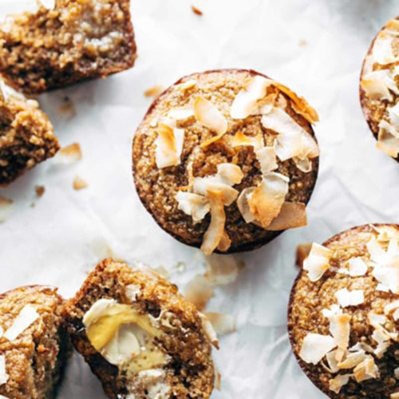

Apple Muffins
These Apple Muffins are EVERYTHING. Wholesome and nutritious, moist and dense, perfectly but not overly sweet, and honestly divine with a little butter and honey.

Ingredients
- 2 cups rolled oats
- 8 dates, pitted (about 3/4 cup)
- 1/2 cup olive oil
- 1/4 cup real maple syrup
- 1-2 apples, grated (about 1-2 cups total)
- 2 eggs
- 1 teaspoon baking soda
- Pinch of sea salt and/or cinnamon (optional)
- Coconut / seeds / nuts / butterscotch chips (optional, for topping)
Instructions
- Preheat the oven to 350 degrees.
- Mix all ingredients in a blender until a chunky batter comes together.
- Pour batter into a greased or lined muffin tin. Sprinkle with butterscotch chips. Bake for 15-18 minutes, until the tops gently spring back when you press into them.
- Sprinkle warm muffins with sea salt if you're into that kinda thing. Serve warm or cold ALL DAY LONG.
Nutrition Facts
Serves 1
Calories Per Serving: 378 |
| Total Fat 24.9g |
32% |
Cholesterol 0mg |
0% |
| Sodium 305.5mg |
13% |
Sugars 20.6g |
0% |
| Protein 10.8g |
22% |
Vitamin A 0µg |
0% |
| Vitamin C 0.4mg |
0% |
Iron 4.1mg |
23% |
| Potassium 577.8mg |
12% |
Phosphorus 341.2mg |
27% |